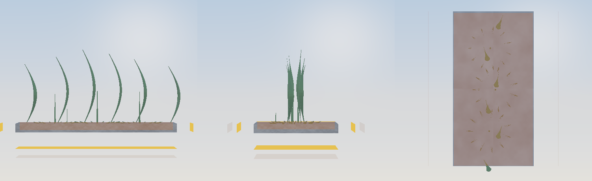
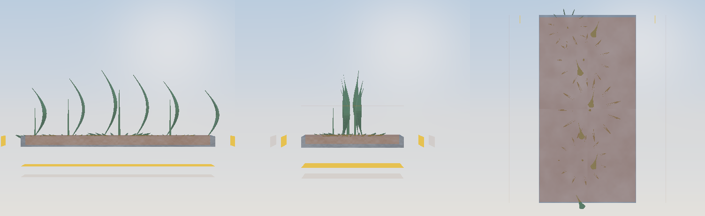
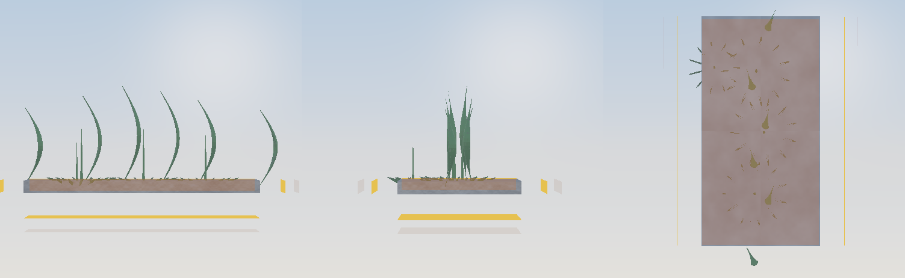

Architectural Sedge
architecture/vegetation/grassA distinct architectural sedge building-landscape object with explicit support, irrigation or attachment semantics and object-local botanical geometry.
Evidence 80/100 · Visual match unmeasured
10 distinct grammar versions
A distinct architectural sedge building-landscape object with explicit support, irrigation or attachment semantics and object-local botanical geometry.
Evidence 80/100 · Visual match unmeasured

A distinct blue fescue grass building-landscape object with explicit support, irrigation or attachment semantics and object-local botanical geometry.
Evidence 80/100 · Visual match unmeasured

A distinct dwarf bamboo grass building-landscape object with explicit support, irrigation or attachment semantics and object-local botanical geometry.
Evidence 80/100 · Visual match unmeasured

A distinct feather reed grass building-landscape object with explicit support, irrigation or attachment semantics and object-local botanical geometry.
Evidence 80/100 · Visual match unmeasured

A distinct fountain grass building-landscape object with explicit support, irrigation or attachment semantics and object-local botanical geometry.
Evidence 80/100 · Visual match unmeasured

A distinct lomandra grass building-landscape object with explicit support, irrigation or attachment semantics and object-local botanical geometry.
Evidence 80/100 · Visual match unmeasured

A distinct miscanthus grass building-landscape object with explicit support, irrigation or attachment semantics and object-local botanical geometry.
Evidence 80/100 · Visual match unmeasured

A distinct mondo grass building-landscape object with explicit support, irrigation or attachment semantics and object-local botanical geometry.
Evidence 80/100 · Visual match unmeasured

A distinct pampas grass building-landscape object with explicit support, irrigation or attachment semantics and object-local botanical geometry.
Evidence 80/100 · Visual match unmeasured

A distinct switchgrass building-landscape object with explicit support, irrigation or attachment semantics and object-local botanical geometry.
Evidence 80/100 · Visual match unmeasured